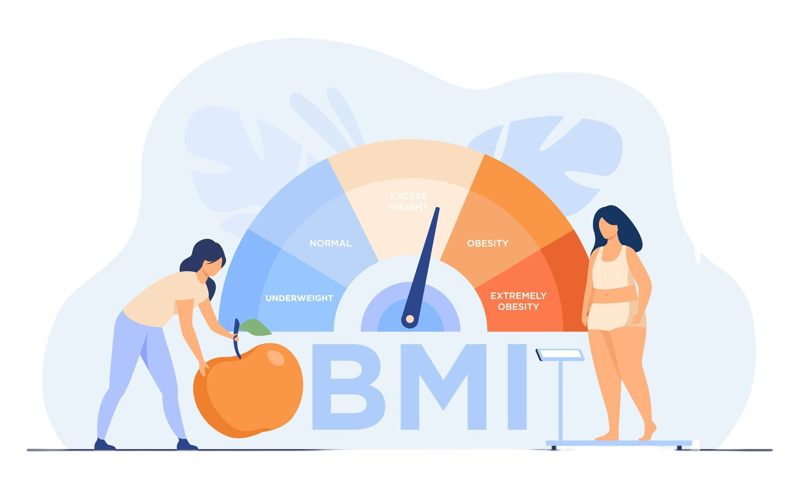

B.M.I
Body Mass Index
Calculate Your BMI and Take the First Step Towards Better Health Today!

Calculate Your BMI and Take the First Step Towards Better Health Today!
Body mass index (BMI) is a value derived from the mass (weight) and height of a person. The BMI is
defined as the body mass divided by the square of the body height, and is expressed in units of kg/m2,
resulting from mass in kilograms (kg) and height in metres (m).
The BMI may be determined first by measuring its components by means of a weighing scale and a
stadiometer. The multiplication and division may be carried out directly, by hand or using a calculator,
or indirectly using a lookup table (or chart).
BMI can help healthcare professionals and scientists determine if a person's weight is healthy or not,and can also be used to predict recovery time after surgery.
BMI can be a good indicator of health risk because higher BMIs are associated with a higher risk of
certain diseases, such as heart disease, high blood pressure, type 2 diabetes, and some cancers.
However, BMI can be inaccurate for some people, such as athletes and older people who have lost muscle.
In these cases, it may be better to measure body fat percentage instead.